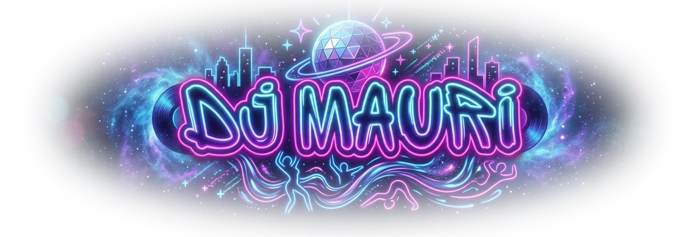
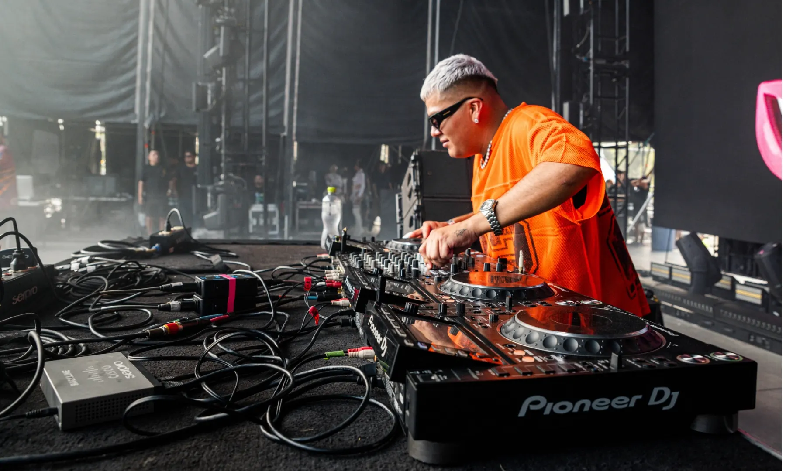

Sesiones




DJ & Productor
Una de las figuras principales del colectivo Perreo De Antes, J Mauri ha llevado su sonido de los clubes de CDMX a más de veinte recintos en México y a la escena de Medellín, Colombia, con dos giras desde 2023. Ha compartido escenario con DJ Playero, Kevin Roldán, Bellakath y Carlos Cortés, ha sido DJ oficial en giras de Snow Tha Product y Milo Mae, y se ha presentado en EDC México, Coca-Cola Flow Fest y el Festival Internacional Cervantino — además de ser DJ oficial de las campañas de Champion en México.
Como productor acumula más de 23 lanzamientos y cerca de 700,000 reproducciones en Spotify, con Déjate Llevar, Animal y Mundo Diferente entre sus temas más escuchados. Su lanzamiento más reciente: Ciudad Romántica (2026), un mixtape colaborativo.
Micrófono inalámbrico · Monitor de referencia · Agua embotellada · Hospitalidad básica · Espacio para artista, equipo técnico y management.